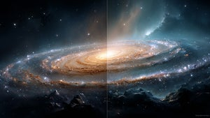

Seit Jahrzehnten stützt sich die moderne Astronomie auf ein Modell, das den Ursprung und die Zusammensetzung unseres Alls erklärt. Doch nun rüttelt eine neue wissenschaftliche Untersuchung an genau diesen Grundfesten und stellt bisherige Gewissheiten zur Debatte.

Ein Physiker der kanadischen Universität Ottawa präsentiert ein Modell, das unser Verständnis der kosmischen Geschichte grundlegend verändern könnte. Rajendra Gupta argumentiert in seiner Arbeit, dass das Universum wesentlich älter ist, als wir bisher angenommen haben.
Mit einer geschätzten Lebensdauer von 26,7 Milliarden Jahren wäre der Kosmos fast doppelt so alt wie nach bisherigen Berechnungen. Zudem stellt die Studie die Existenz von Dunkler Materie komplett infrage.
Die Ergebnisse der Untersuchung basieren auf einer Analyse von Daten, die unter anderem die Verteilung von Galaxien betreffen. Wie Earth.com berichtet, könnte dies eines der größten Rätsel der modernen Astronomie lösen.
Dabei handelt es sich um die Beobachtungen des von der US-Weltraumbehörde Nasa betriebenen James-Webb-Weltraumteleskops. Dieses hatte Galaxien entdeckt, die für das bisherige Modell des frühen Universums deutlich zu massereich erscheinen. Hier setzte Gupta an.
Er nutzte für seine Berechnungen eine Kombination aus zwei physikalischen Konzepten. Er verband die Theorie der mitvariierenden Kopplungskonstanten mit der Hypothese des sogenannten müden Lichts.
Die erste Annahme geht davon aus, dass sich grundlegende Naturkräfte über Milliarden von Jahren hinweg verändern können. Die Hypothese des müden Lichts besagt wiederum, dass Lichtteilchen auf ihrem langen Weg durch den Raum an Energie verlieren.
Sollten sich diese physikalischen Konstanten tatsächlich verändern, wäre die Annahme einer unsichtbaren Dunklen Materie laut der Studie nicht mehr notwendig. Diese Komponente macht im Standardmodell etwa 27 Prozent des Inhalts unseres Universums aus.
In der im Wissenschaftsmagazin The Astrophysical Journal veröffentlichten Arbeit wird dargelegt, dass variable Kräfte die Beobachtungen ebenso genau erklären. Damit ließe sich die beschleunigte Expansion des Alls begründen, ohne auf hypothetische Substanzen zurückgreifen zu müssen.
Trotz der mathematischen Herleitung gibt es in der wissenschaftlichen Gemeinschaft erhebliche Zweifel an dieser Darstellung. Kritiker:innen weisen darauf hin, dass die Theorie des müden Lichts bereits in der Vergangenheit mehrfach durch Beobachtungen widerlegt wurde.
Insbesondere die zeitliche Dehnung von Supernovae-Lichtkurven ließe sich mit einem statischen Energieverlust von Photonen kaum vereinbaren. Auch die hochpräzisen Daten der kosmischen Hintergrundstrahlung stützen bisher eher das herkömmliche Modell.
Quelle: https://t3n.de/news/muedes-licht-statt-dunkler-materie-1738345/